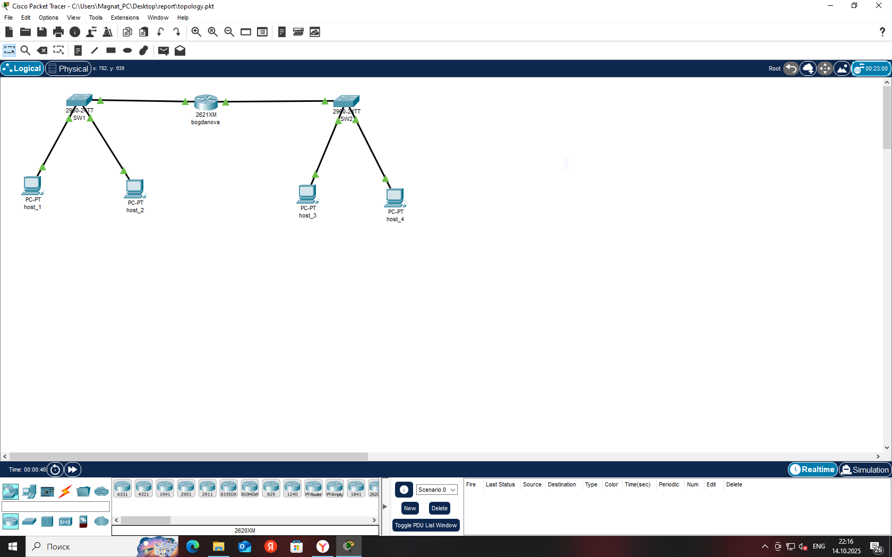
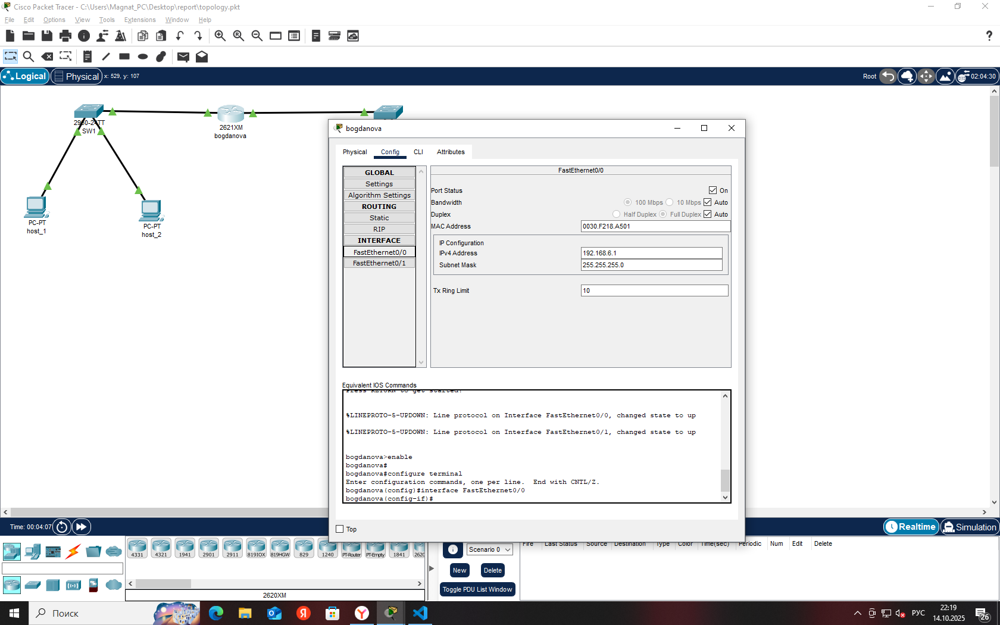
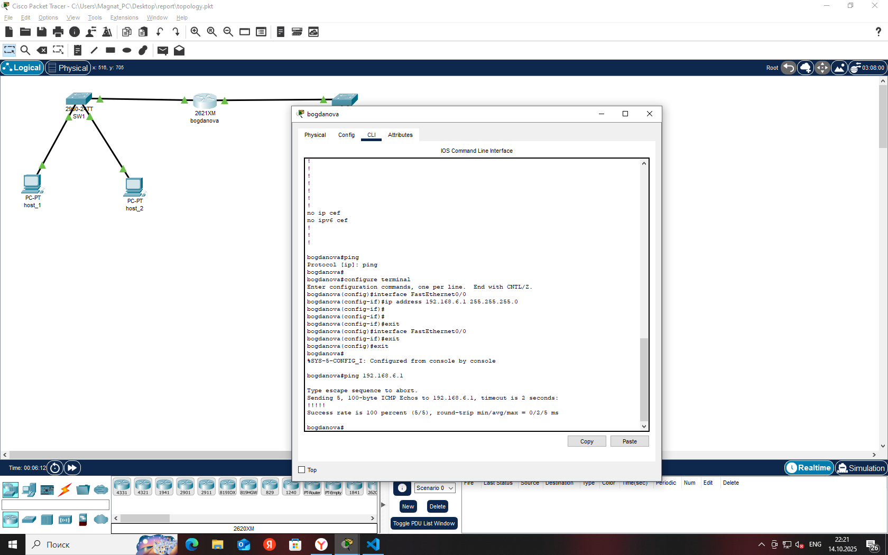

Содержимое отчёта
Изображение топологии
Комментарий: Это полная схема сети с роутером, двумя коммутаторами и четырёх PC.
Снимки экрана с комментариями
Комментарий: Здесь показана настройка IP на fa0/0 роутера. Введите 'ip address 192.168.1.1 255.255.255.0' — это адрес для первой подсети.
Изображение работающей топологии
Комментарий: Ping проходит успешно — зелёные индикаторы означают, что сеть работает.
Выводы по проекту
В ходе работы я настроил базовую сеть в Packet Tracer. Узнал о командах CLI, troubleshooting и экспорте конфигураций. Основные сложности: правильный выбор кабелей. В будущем хочу изучить VLAN.